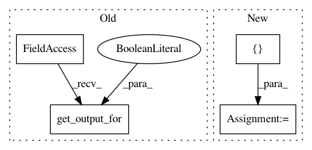

9caa24c58689c1d6f3d982f623ceab8f78e7362d,softlearning/algorithms/diayn.py,DIAYN,_init_actor_update,#DIAYN#,212
Before Change
self._vf_t = self._vf.get_output_for(self._obs_pl, reuse=True) // N
self._vf_params = self._vf.get_params_internal()
log_target_t = self._qf.get_output_for(
self._obs_pl, tf.tanh(self._policy_dist.x_t), reuse=True) // N
corr = self._squash_correction(self._policy_dist.x_t)
corr = tf.check_numerics(corr, "Check numerics: corr")
After Change
actions, log_pi_t = self._policy.actions_for(
observations=self._obs_pl, with_log_pis=True, reuse=True)
self._V_t = self._V([self._obs_pl])
self._V_params = self._V.trainable_variables
log_target_t = self._Q([self._obs_pl, actions])
scaled_log_pi = self._scale_entropy * (log_pi_t)
self._kl_surrogate_loss_t = tf.reduce_mean(log_pi_t * tf.stop_gradient(
scaled_log_pi - log_target_t + self._V_t)
)
self._V_loss_t = 0.5 * tf.reduce_mean(
(self._V_t - tf.stop_gradient(log_target_t - scaled_log_pi))**2
)
policy_loss = (self._kl_surrogate_loss_t
+ self._policy.distribution.reg_loss_t)
policy_train_op = tf.train.AdamOptimizer(self._policy_lr).minimize(
loss=policy_loss,
var_list=self._policy.get_params_internal()
In pattern: SUPERPATTERN
Frequency: 3
Non-data size: 4
Instances
Project Name: rail-berkeley/softlearning
Commit Name: 9caa24c58689c1d6f3d982f623ceab8f78e7362d
Time: 2018-10-20
Author: hartikainen@berkeley.edu
File Name: softlearning/algorithms/diayn.py
Class Name: DIAYN
Method Name: _init_actor_update
Project Name: rail-berkeley/softlearning
Commit Name: 9caa24c58689c1d6f3d982f623ceab8f78e7362d
Time: 2018-10-20
Author: hartikainen@berkeley.edu
File Name: softlearning/algorithms/diayn.py
Class Name: DIAYN
Method Name: _init_critic_update
Project Name: rail-berkeley/softlearning
Commit Name: 9caa24c58689c1d6f3d982f623ceab8f78e7362d
Time: 2018-10-20
Author: hartikainen@berkeley.edu
File Name: softlearning/algorithms/diayn.py
Class Name: DIAYN
Method Name: _init_discriminator_update